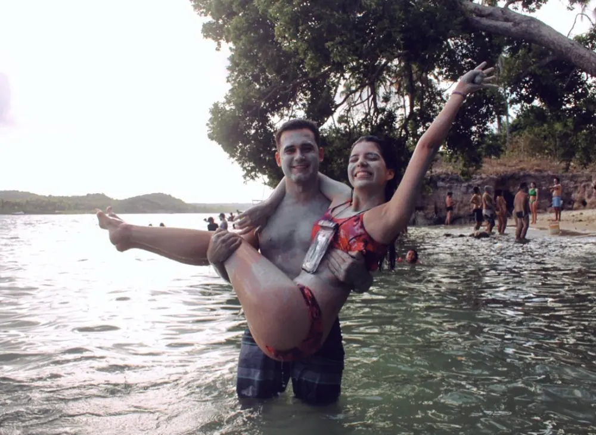
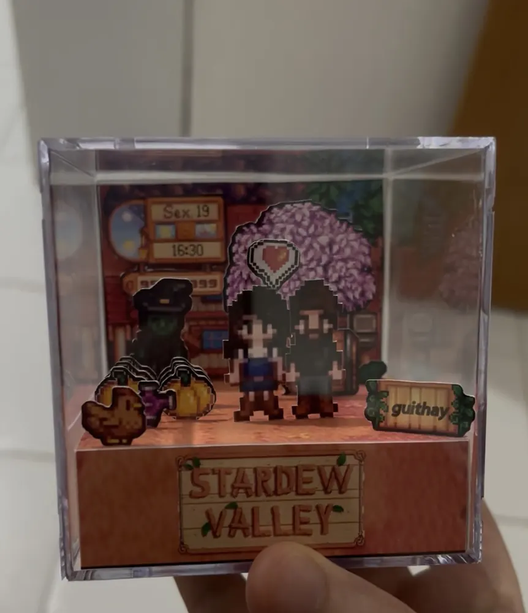
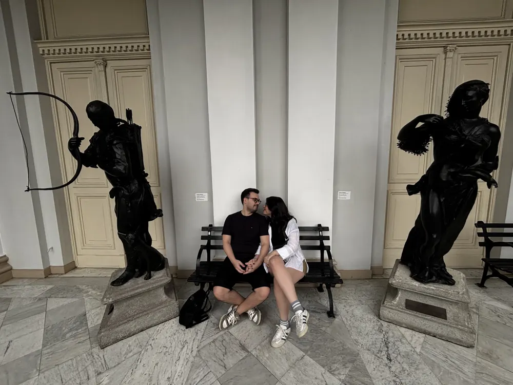
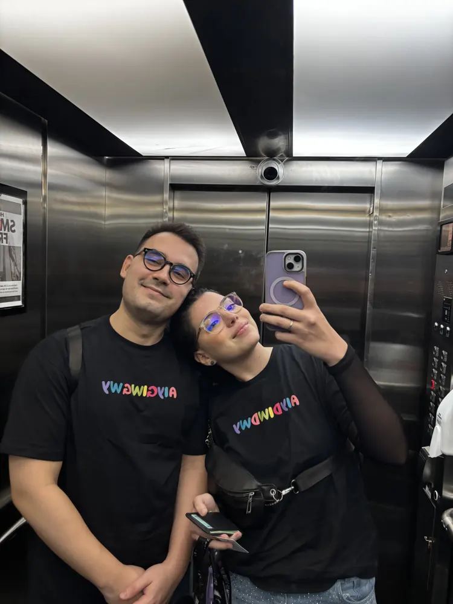
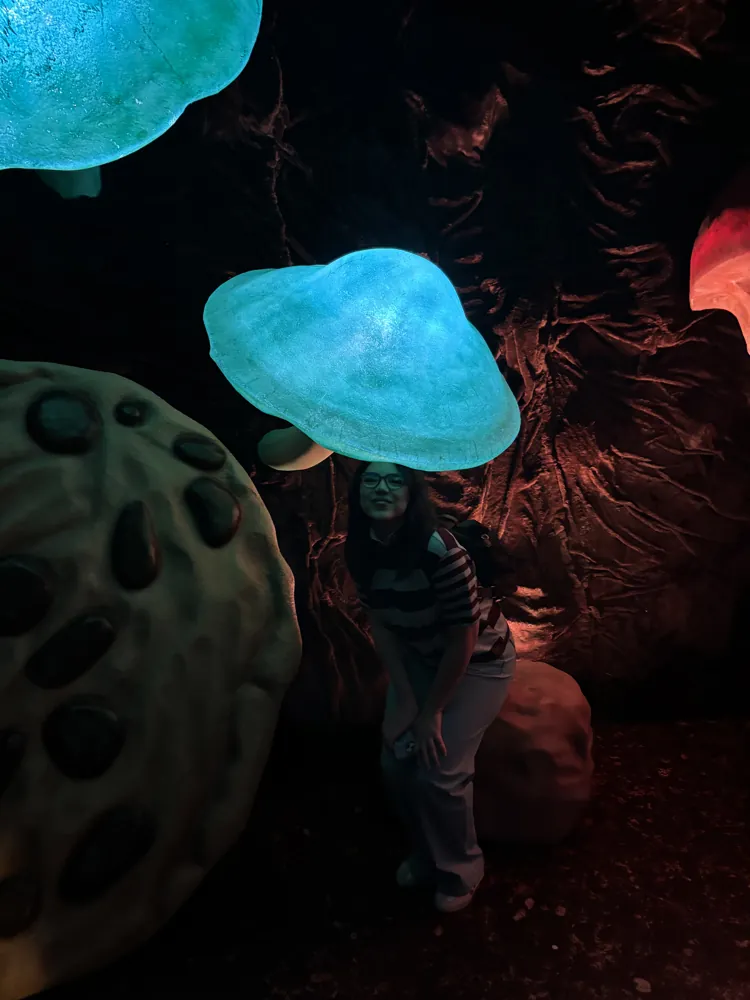
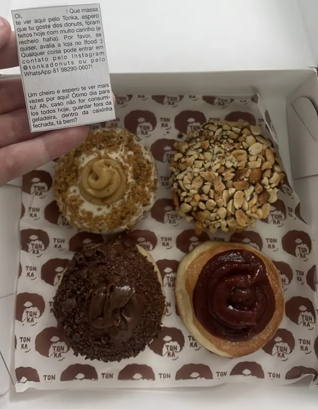
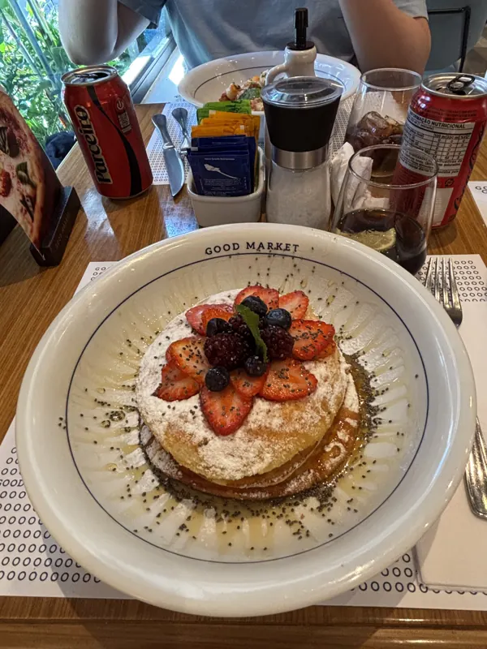
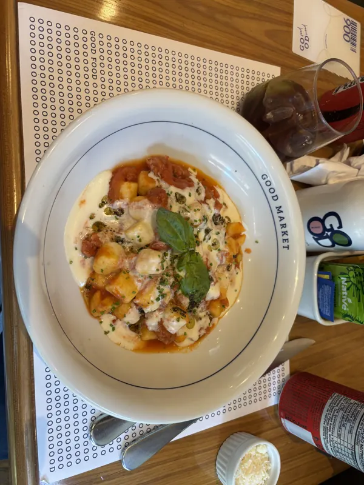

Minha noivaMy fiancée
Thaynná.
Essa parte é dedicada ao amor da minha vida, minha noiva Thaynná, com quem, se Deus quiser, eu me caso ano que vem. Eu não estaria onde estou sem ela.This part is dedicated to the love of my life, my fiancée Thaynná, who, God willing, I'm marrying next year. I wouldn't be where I am without her.








Café, chocolate e comida boaCoffee, chocolate and good food
As três grandes paixões dela: café, chocolate e lugar com comida boa.Her three great passions: coffee, chocolate and places with good food.




